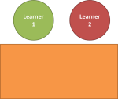
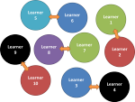

TKT Core Module 3: Teachers' and learners' language in the classroom
Grouping learners
Grouping learners is a key planning and management skill. It can be overdone and some learners feel it gets tedious so handle with some care.
 |
Key concepts in this guideBy the end of this guide, you should be able to understand and use these key concepts: |
Look out for these words like this
in the text.
There will be tests at the end of the guide for you to check that
you understand the ideas.
 |
Why group learners at all? |
There are a number of advantages to grouping students at various times in most lessons. They include:
Matching grouping to task type
Consider these 10 arrangements of learners and try to say what could be happening in each arrangement.
Click on each image for an answer.
|  |
pairs working together on a task they can both see easily
|
 |
collaborating on a task in a group of 4 or interviewing each
other
|
|
pairs interviewing each other or exchanging ideas
|
 |
students mingling to find someone who ...
the teacher could be anywhere in the room this can vary with one student talking to two, two to two and so on |
|
|
discussing in fours
note the lack of a table to make it easier |
whole-class pair work with the teacher assisting one pair
the teacher can also (arguably should) assist from the other side of the table and make eye contact sitting / crouching |
||
|
teacher presentation or getting / giving feedback from / to the whole class
everyone can see everyone |
 |
collaborating
on a task in threes
|
|
|
2 students interviewing one or vice versa
|
 |
whole-class discussion (teacher standing out)
|
There is more on this in a guide on this site to classroom arrangement. Here we are concerned with the reasons for choosing between possible arrangements.
The fundamental distinction is between
It's a simple process to classify all the arrangements in the diagrams above. Try it.
 |
Group- / pair-work tasks |
Here's an (incomplete) list of the sorts of tasks often (not always) best done in pairs or groups.
- speaking tasks
- role plays (social setting, commercial transactions, advice
giving etc.)
interviews (tell me about, tell me what you think about etc.)
discussions (in groups of more than two, probably)
pair work in threes (two learners talk, the third listens and takes note of uses of the target items, ways of taking turns / giving feedback to each other etc.) - writing tasks
- constructing a dialogue using target items
planning a piece of writing by brainstorming things to say and the order in which to write them
writing lists and prioritising lists - structural / lexical tasks
- noting differences in meaning between sentences with different
structures
gap fills
sentence completion tasks
lexis matching tasks (item to picture, item to definition etc.) - reading tasks
- reading two different parts of a text each and then exchanging
the ideas and facts
reading information and making collaborative decisions about choices (holiday brochures, course descriptions, entertainment guides etc.)
reading part of a story and speculating about what happens next before reading the next part to see if the guesses were correct - listening tasks
- listening to a song / piece of music and comparing reactions
listening to an announcement and deciding who in the group it applies to
listening to each other telling a story and giving feedback
When not to group students
Please don't assume from any of this that pair- or group-work is
always preferable. There are times when it is both appropriate and
important that the whole class works together or individuals work alone.
For example, if the nature of the activity is to allow individuals to
see if they have grasped the target of the lesson and can put it into
practice, it's actually inappropriate to carry out the task in
groups or pairs.
Silent reading, too, is usually done, authentically, alone, and getting
learners to read the same text together is arguably not a useful
exercise.
It is for you to
decide what you want the activity to achieve and then choose the best
way of conducting it.
 |
The teacher's role |
The other consideration here is where you should be and what you should be doing. Again, there are distinctions
Take the time

- It is not a waste of time spending some of it making sure that an activity is properly set up and that the groupings are arranged in a way that makes the task easy to achieve. It's also worth remembering that most people actually like to get up and move around at times.
- Be clear in your planning stage how you want people to sit or stand depending on the nature of the activity you have devised. Add the description into your lesson notes so you don't forget to (re-)arrange the learners and the room accordingly.
- Become expert at setting activities up quickly and efficiently so that your learners gain the
most benefit and the arrangement does not actually hinder them.
This usually means being slightly assertive (no, not rude) with
instructions such as
Mary, John and Peter. Please sit here, here and here
or
Right. Everyone. Move the tables back and come round into the front now, please.
Do not be vague with 'instructions' such as
Be sure you can talk easily
or
I wonder if you'd like to move over here.
Those aren't actually instructions at all.
 |
Self-test questions |
Before you go on, make sure you can answer these questions. If you can't, go back to the sections which give you trouble.
If you are happy with your progress, go on.
 |
Tests and practice for TKT |
There's only one practice test.
| Test 1 | A matching task |
Now you can return to the Module 3 index:

or go on to the next
guide which is to
correcting learners.